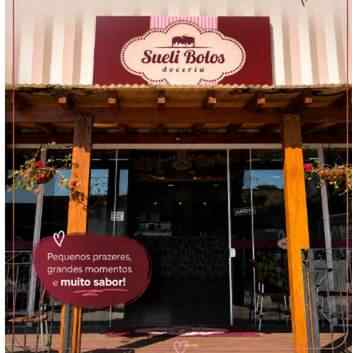
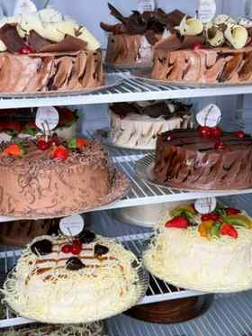
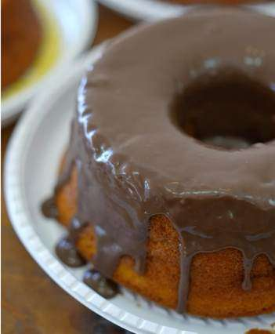

Consultoria de Impacto · Resultados
Nova Sueli Bolos
Consultoria técnica realizada em Boituva/SP: boas práticas, documentação e gestão de custos.
Confira os resultados

DaRê Consultoria de Alimentos
Renata Flosi Coli · Nutricionista · CRN 7377
Quem somos
Quem conduziu a consultoria
29 anos
de formação como nutricionista
4
pós-graduações na área de alimentos e consultoria
Ética
princípios da categoria e da legislação sanitária
- Renata Flosi Coli, nutricionista e consultora de alimentos (CRN 7377).
- Pós-graduada em Nutrição Clínica, Rotulagem de Alimentos e Bebidas, RT e Consultoria de Alimentos, e Consultoria de Alimentos pelo método Consultoria de Impacto.
- Atuou como responsável técnica e consultora da Nova Sueli Bolos.
O ponto de partida
Um cliente exigiu responsável técnica e documentos
Exigência de cliente
Uma empresa cliente pediu a atuação de uma nutricionista como responsável técnica.
Documentos pendentes
Vários documentos solicitados ainda não existiam na empresa.
Equipe grande
Dezesseis colaboradoras que precisavam trabalhar com o mesmo padrão.
Muitos sabores
Vinte e nove sabores de bolo, cada um com sua receita e seu custo.
A consultoria transformou a exigência em um sistema de trabalho permanente.

O que foi feito
Quatro frentes de trabalho
01
Diagnóstico e acompanhamento
Levantamento de dados e visitas técnicas mensais.
02
Pessoas e cultura sanitária
Treinamentos em Boas Práticas de Manipulação e Fabricação.
03
Conformidade sanitária e legal
Manual de Boas Práticas, POPs, regulatório e pasta de documentos.
04
Gestão e custos
Fichas técnicas gerenciais e cálculo do CMV.
A jornada
Nove entregas, do levantamento à pasta final
Levantamento de dados
Retrato da empresa e das pendências.
Treinamentos
Boas Práticas de Manipulação e Fabricação.
Manual de Boas Práticas
Manual BPF feito para a produção de bolos.
POPs
Passo a passo das tarefas críticas.
Fichas técnicas
Fichas gerenciais para 29 sabores de bolo.
CMV
Custo da mercadoria vendida calculado.
Visitas técnicas
Acompanhamento mensal na empresa.
Regulatório
Documentação para fiscalização e cliente.
Pasta fichário
Todos os documentos em um só lugar.
A transformação
Do que faltava ao que passou a existir
| Tema | Antes | Depois |
|---|---|---|
| Padrão de trabalho | Sem Manual de Boas Práticas e POPs próprios. | Manual BPF e POPs feitos sob medida para a produção de bolos. |
| Custos | Receitas sem ficha técnica gerencial e sem CMV apurado. | 29 fichas técnicas e CMV calculado. |
| Equipe | Capacitação em boas práticas não formalizada. | Equipe treinada em manipulação e fabricação de alimentos. |
| Documentação | Documentos exigidos pelo cliente ainda inexistentes. | Pasta fichário pronta para fiscalização e auditoria. |
Em números
O que a consultoria entregou
9
entregas realizadas
29
fichas técnicas gerenciais, uma por sabor de bolo
16
colaboradoras atendidas pela consultoria
Mensal
acompanhamento com visitas técnicas
Cada número representa um padrão que a empresa passou a ter.
No balcão
O resultado chega ao produto
Bolos de vitrine
Receita e custo padronizados

Bolo confeitado
Boas Práticas do preparo ao balcão
Café e bolo
Sabor com segurança
Resultados
O que muda para a Nova Sueli Bolos
- Atende à exigência do cliente e protege uma relação comercial importante.
- Reduz o risco sanitário, com procedimentos e registros definidos.
- Dá base para decidir preço e margem com fichas técnicas e CMV.
- Torna a produção repetível, mesmo quando a equipe muda.
Documentos prontos para fiscalização e auditoria.
Próximos passos
Manter o que foi implantado
01
Visitas técnicas mensais
Verificar registros, corrigir desvios e apoiar a equipe.
02
Reciclagem da equipe
Treinar novas colaboradoras e reforçar as boas práticas.
03
Atualização dos documentos
Rever Manual, POPs e pasta quando algo mudar.
04
Revisão de fichas e CMV
Atualizar custos com novos fornecedores, preços e receitas.
Obrigada
Vamos seguir cuidando juntos?
Renata Flosi Coli
Nutricionista · Consultora de Alimentos · CRN 7377
WhatsApp (15) 99779-7153
E-mail darenutricao@gmail.com
Instagram @dareconsultoriadealimentos
Cidade Porto Feliz/SP